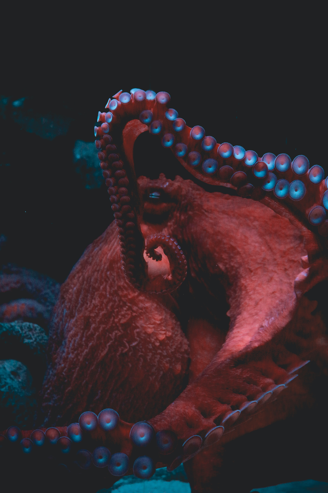

Octopuses are fascinating creatures which you would be forgiven for mistaking as alien lifeforms at first glance. Sporting 8 flexible arms, a shimmering, camoflaging skin, and a self-made supply of defensive ink, they are truly unlike any other creature on this planet. Perhaps the most remarkable features of octopuses (that's the correct plural by the way!) are their large, complex, and conscious brains. Every octopus has its own personality for you to explore and discover, so please stick around and get to know these alien minds!

